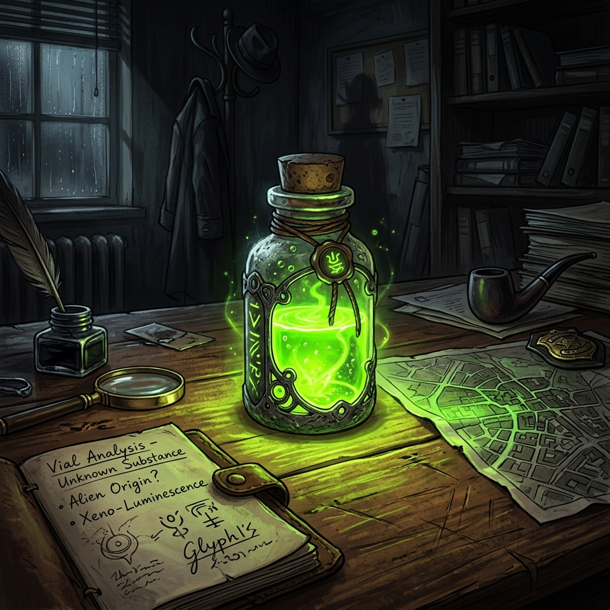
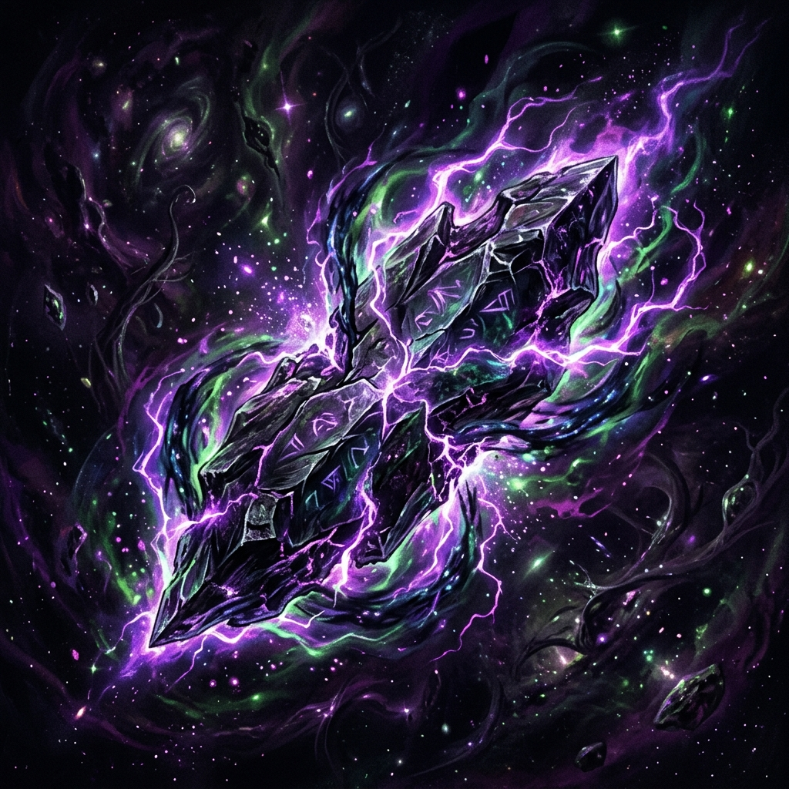
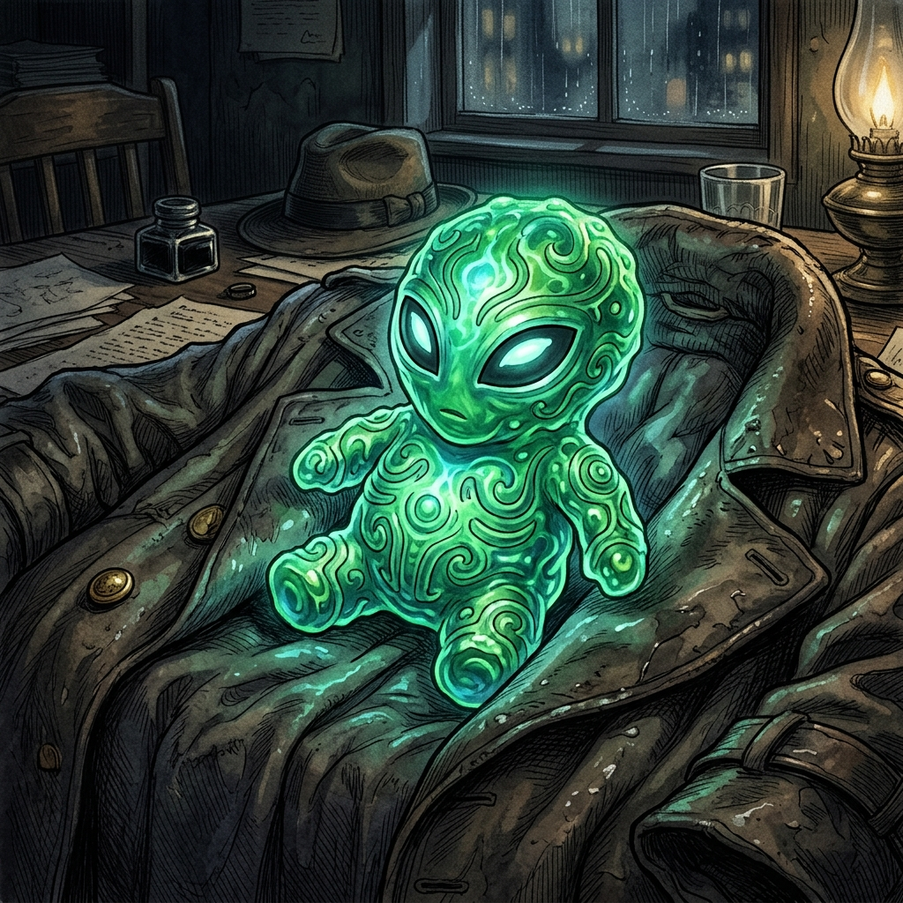
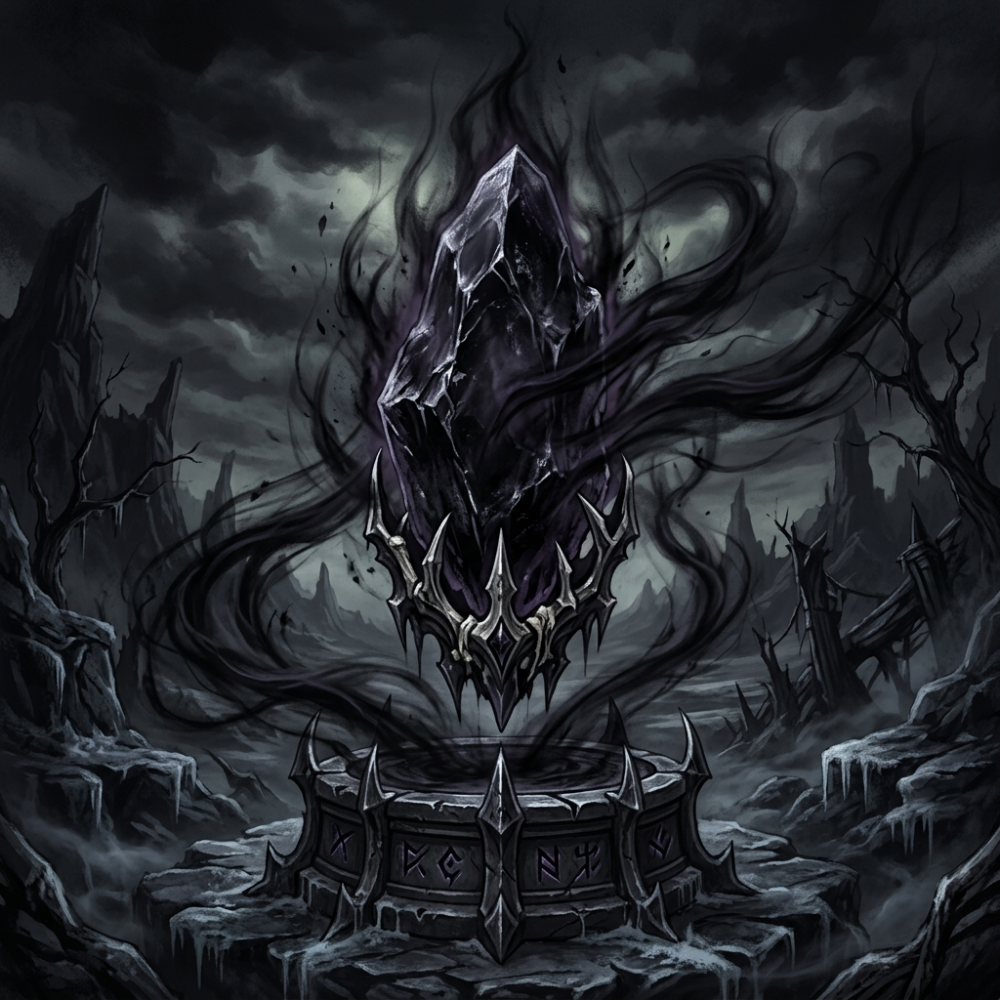
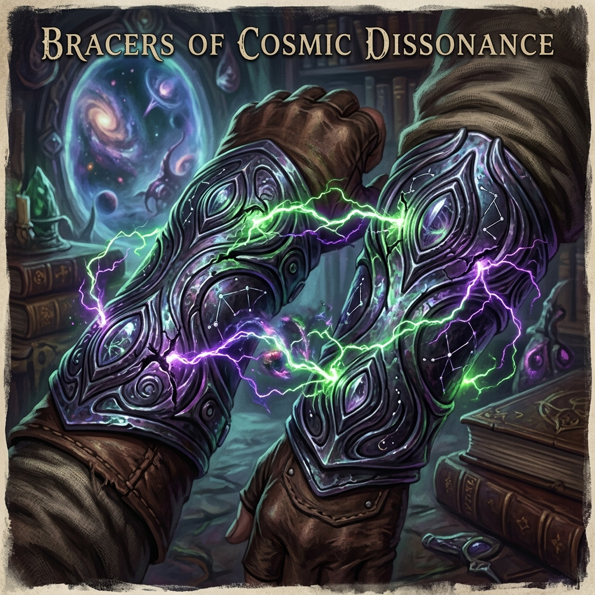
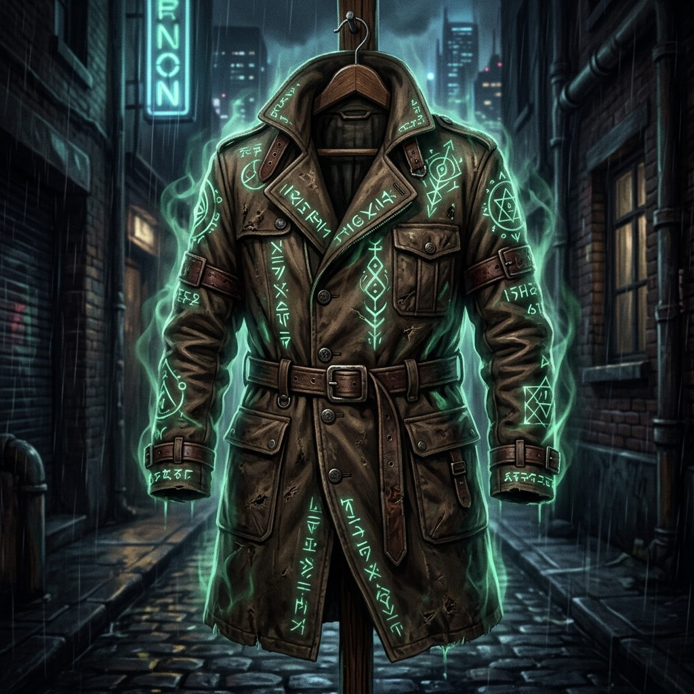

El compendio definitivo de ejecución psiónica

Efecto: +1 a CD de conjuros y ataques mágicos.
Recarga: Al gastar Dados de Golpe en descanso corto, recuperas 5 Puntos de Hechicería.
Efecto: +1 a tu Clase de Armadura (CA) y +1 a TODAS tus tiradas de salvación.
Efecto: Como acción, recuperas un espacio de conjuro gastado de nivel 3 o inferior. Usable 1 vez al día.
Efecto: Obtienes velocidad de vuelo igual a tu velocidad al caminar, hasta 4 horas al día.
Efecto: Inmune a magia que lea pensamientos, determine mentiras o alinee. Tu presencia psíquica queda oculta.
Efecto: Lanzas Disguise Self a voluntad, infinitas veces al día, sin usar espacios de conjuro.

Efecto: Al usar Metamagia, un objetivo a 30 pies sufre 3d6 de daño psíquico y queda Asustado si falla la salvación (CHA).

Efecto (Stirring): +1 a CD. Ganas Resistencia Psíquica. Puedes cambiar el tipo de daño de CUALQUIER hechizo a Psíquico.

Efecto: Al usar Metamagia, fuerzas a un objetivo a 30 pies a tener Desventaja en pruebas y salvaciones de un Atributo (ej. Sabiduría) hasta tu próximo turno. Sin tirada de salvación.
Efecto: Almacena hasta 5 niveles de conjuros. (Ideal para pre-cargar Shield o Absorb Elements de forma gratuita).
Efecto: Todo ataque contra ti tiene Desventaja. Si sufres daño, la ilusión se rompe hasta tu próximo turno.

Efecto: Cada vez que lanzas un truco (Cantrip) como Acción, puedes lanzar ese mismo truco como Acción Adicional gratis.
Efecto: Tras 48 horas de estudio, tu puntuación de Carisma aumenta permanentemente en +2 (hasta un máximo de 22).
Efecto: +2 a CD, CA y ataques. Contiene 20 cargas para lanzar magia destructiva masiva.

Armadura Absoluta: Si no llevas armadura, tu CA es 15 + Destreza.
Resistencia: Tienes Ventaja en todas las salvaciones contra magia.
Dominio Mágico: Tu CD de conjuros y ataques mágicos aumentan en +2.
Efecto: Aumenta tu Bonificador de Competencia (Proficiency Bonus) en +1.
Efecto: Ventaja contra magia. Absorbes conjuros hostiles. 50 cargas para magia legendaria.